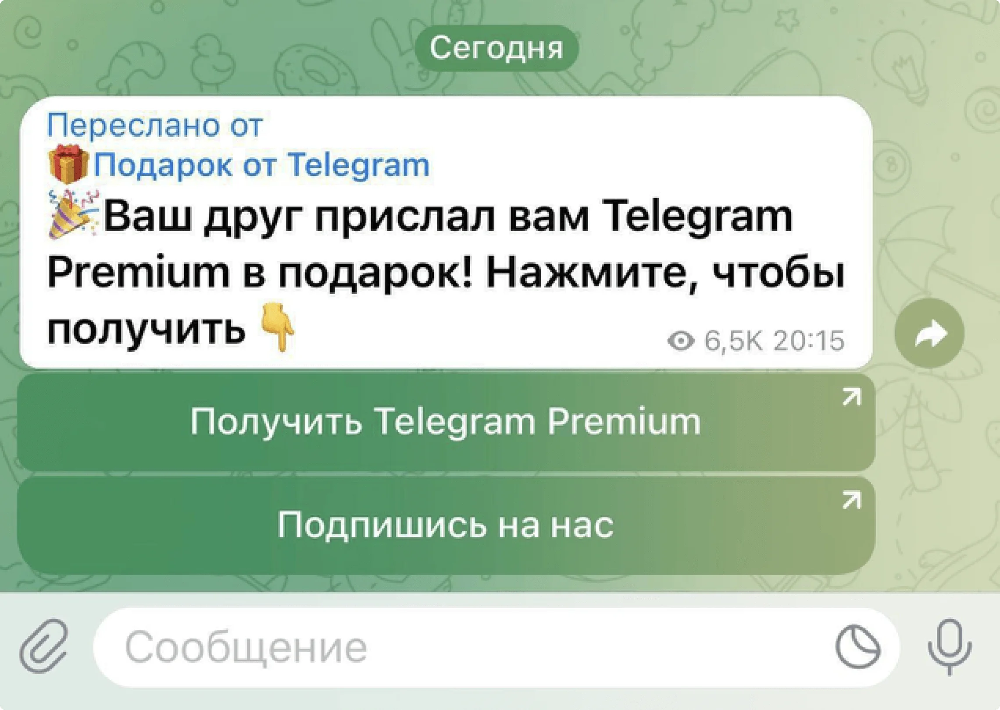
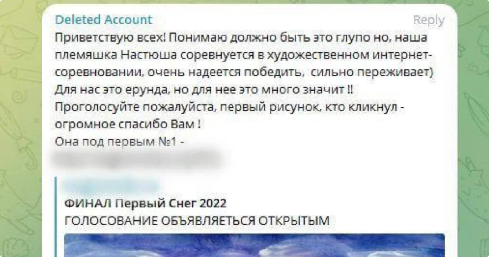

Как защитить аккаунт в Телеграме от мошенников
Содержание:
Спрячьте дату Дня рождения
Пользователь получает сообщение от одного из своих контактов с «подарком» — подпиской на Telegram Premium:
Что происходит дальше:
- Нажав на кнопку «Получить Telegram Premium», пользователь получает код авторизации и попадает в бот. В нем просят ввести этот код, чтобы активировать подписку.
- Злоумышленник использует код, чтобы войти в аккаунт жертвы со своего устройства и получить доступ ко всем контактам и перепискам.
- От лица взломанного пользователя мошенник рассылает такие же сообщения по списку контактов. А после — удаляет эти сообщения, чтобы жертва не знала, на кого распространилась рассылка. У получателей сообщения остаются.
- Мошенник сохраняет доступ к взломанному аккаунту, пока пользователь не удалит устройство злоумышленника из списка авторизованных.
Схема № 2: Проголосуйте за племянницу
Вам приходит сообщение с просьбой поддержать ребенка в «конкурсе рисунков» и проголосовать за работу на странице «интернет-соревнования».
Что происходит дальше:
- При переходе по ссылке пользователь попадает на страницу фейкового конкурса, где его просят ввести код для авторизации.
- После ввода кода злоумышленники получат доступ к вашему аккаунту и начнут рассылать аналогичные сообщения от вашего имени.
- С каждым взломанным аккаунтом схема повторяется.
Что делать, если вы перешли по ссылке и отправили код?
- Откройте Телеграм и перейдите в «Настройки».
- Выберите «Устройства» и нажмите на опцию «Завершить другие сеансы».
- Включите двухфакторную аутентификацию. Как — рассказываем ниже.
Как защитить аккаунт от таких атак?
Настройте двухфакторную аутентификацию. Даже если злоумышленник узнает код авторизации, после этого ему нужно будет ввести пароль, который знаете только вы.
Как настроить двухфакторную аутентификацию:
- Откройте Телеграм и перейдите в «Настройки».
- Зайдите в раздел «Конфиденциальность» и выберите пункт «Облачный пароль».
- Нажмите «Установить пароль».
- Придумайте надежный пароль или кодовую фразу, подтвердите создание пароля.